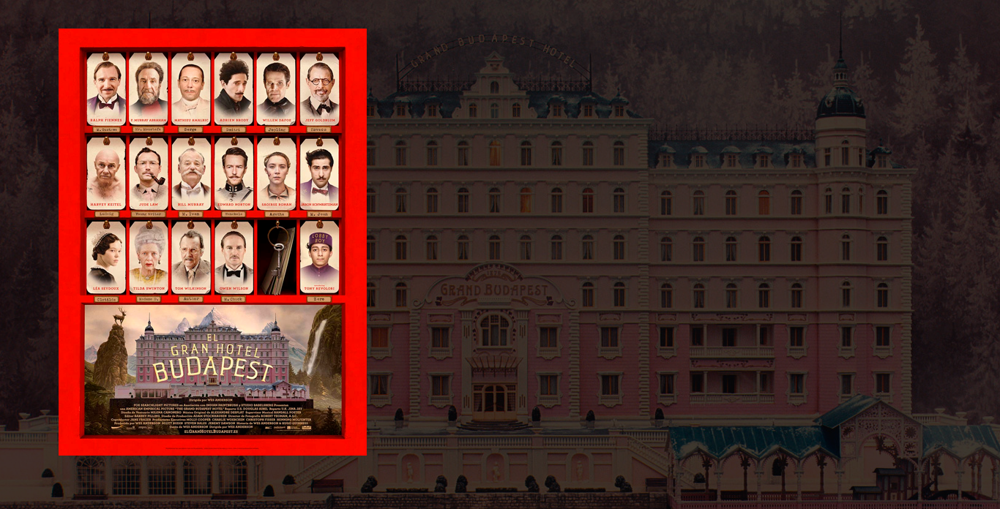

El Sr. Gustave H. (Ralph Fiennes), un legendario conserje de un famoso hotel europeo de entreguerras, entabla amistad con Zero Moustafa (Tony Revolori), un joven empleado al que convierte en su protegido. La historia trata sobre el robo y la recuperación de una pintura renacentista de valor incalculable y sobre la batalla que enfrenta a los miembros de una familia por una inmensa fortuna. Como telón de fondo, los levantamientos que transformaron Europa durante la primera mitad del siglo XX.